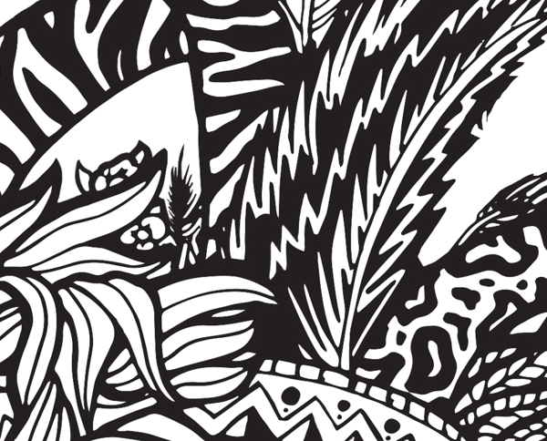
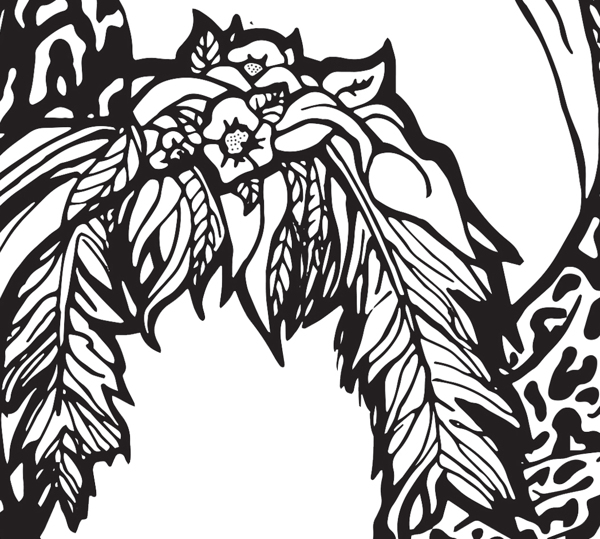
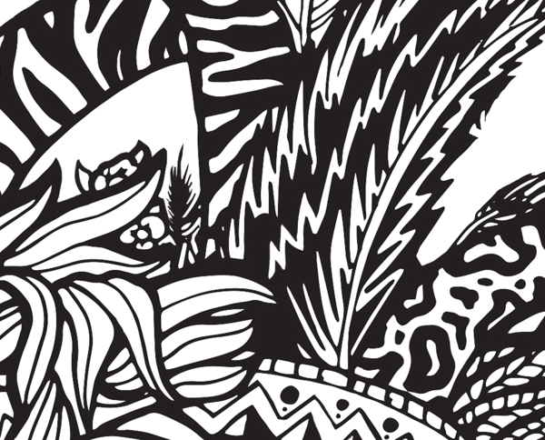
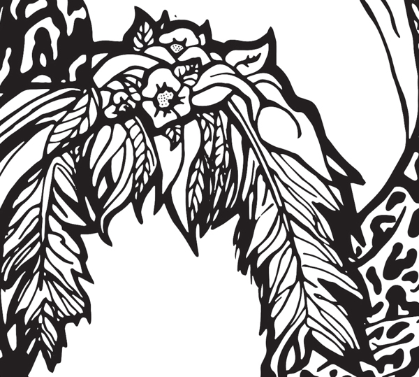

The premise behind each of these pieces was to re-create the cover for the famous "Joseph Conrad" novel Heart of Darkness. These black and white designs try to capture the culture and emotions of the native people fetured in the novel.
Enjoy !
 


